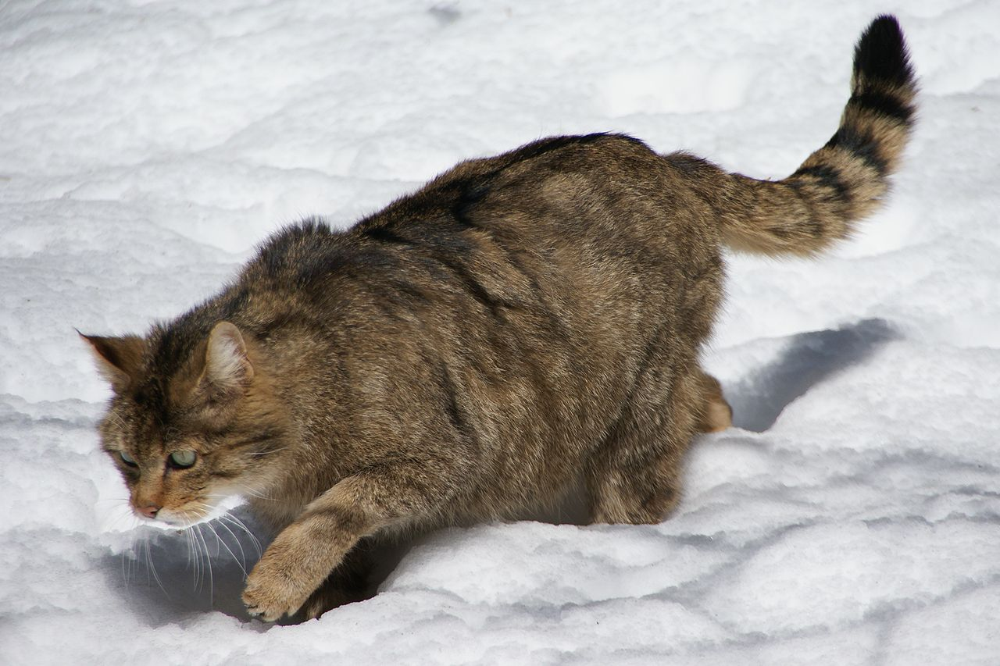
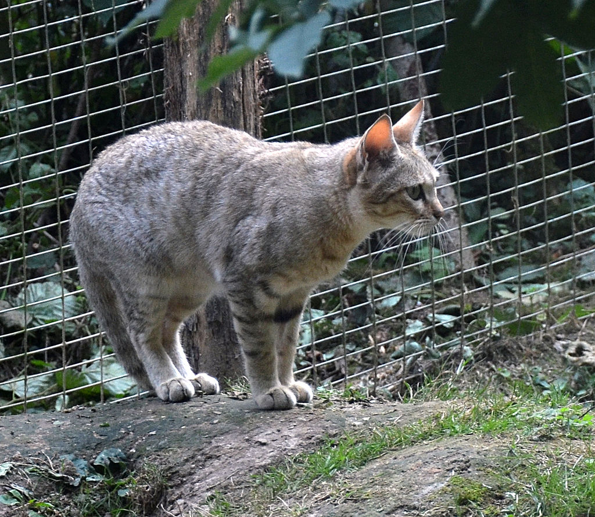

Коти
Кіт — рід хижих ссавців родини котових (Felidae). У деяких старіших системах класифікації до нього зараховували всіх представників малих кішок (Felinae), проте зараз безпосередньо до роду відносяться лише кілька видів невеликих тварин, що мешкають у Євразії та Африці. Найвідомішим представником цього роду є свійський кіт — підвид кота степового.
Види котів
- Домашня кішка

- Лісовий кіт

- Очеретяний кіт
- Степовий кіт

- Чорноногий кіт
- Бархановий кіт

- Китайська кішка
Цікаві факти про котів
- Коти можуть здійснювати стрибки в 7 разів довжини свого тіла. Це означає, що якщо ваш кіт важить 4 кг і має довжину тіла 60 см, то він може стрибнути на відстань більше 4 метрів!
- Коти мають дуже гнучкий хребет. У них є більше кісток у своєму хребті, ніж у людей, що дозволяє їм виконувати неможливі для нас фізичні трюки.
- Коти дуже чутливі до запахів. Вони можуть розрізняти різні запахи й навіть розпізнавати своїх господарів за запахом.
- Коти можуть видавати понад 100 різних звуків. Вони вміють муркотіти, м’яукати, шипіти та багато інших звуків, щоб виразити свої почуття.
- Коти сплять більше ніж люди. Вони можуть спати від 12 до 16 годин на день!